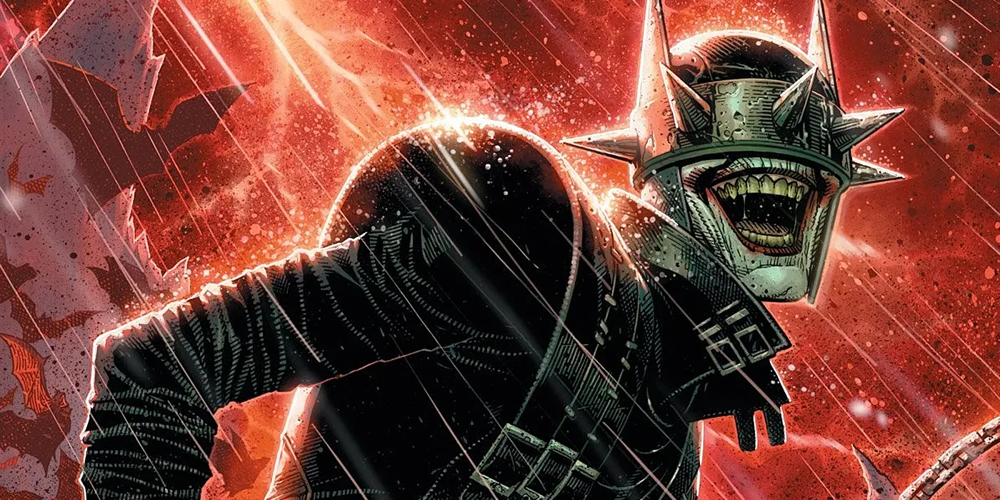

One of the most iconic characters in popular culture, Batman has been listed among the greatest comic book superheroes and fictional characters ever created. He is one of the most commercially successful superheroes, and his likeness has been licensed and featured in various media and merchandise sold around the world; this includes toy lines such as Lego Batman and video games like the Batman: Arkham series. Batman has been adapted in live-action and animated incarnations, including the 1960s Batman television series played by Adam West and in film by Michael Keaton in Batman (1989), Batman Returns (1992), and The Flash (2023), Val Kilmer in Batman Forever (1995), George Clooney in Batman and Robin (1997), Christian Bale in The Dark Knight trilogy (2005–2012), Ben Affleck in the DC Extended Universe (2016–present), and Robert Pattinson in The Batman (2022). Kevin Conroy, Diedrich Bader, Jensen Ackles, Will Arnett, Jimmy Kimmel, and Keanu Reeves, among others, have provided the character's voice.
